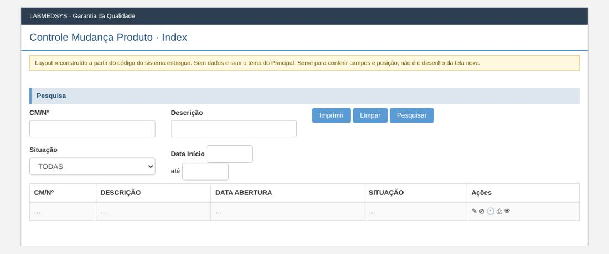
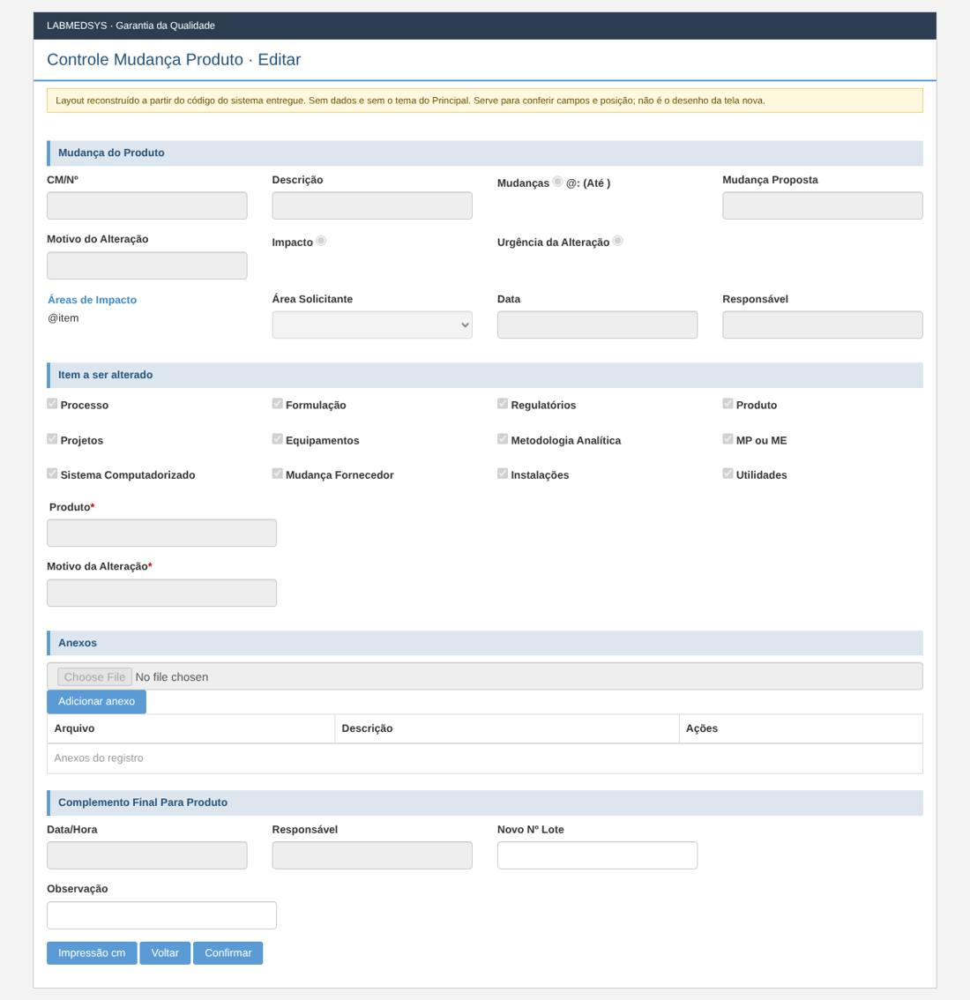
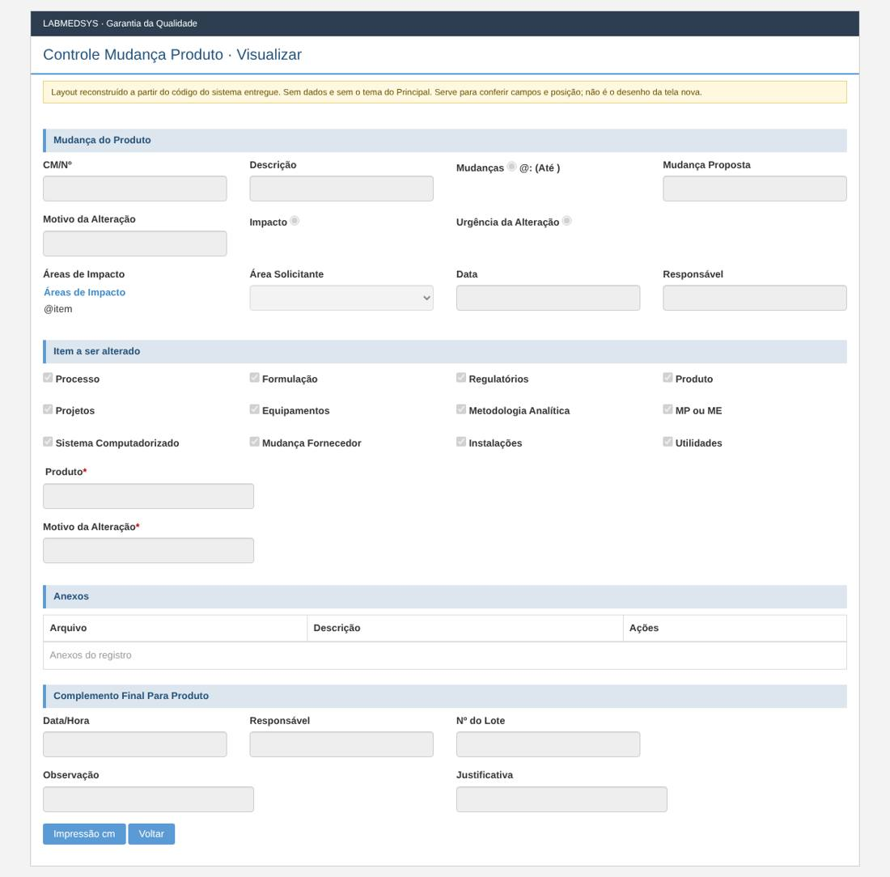
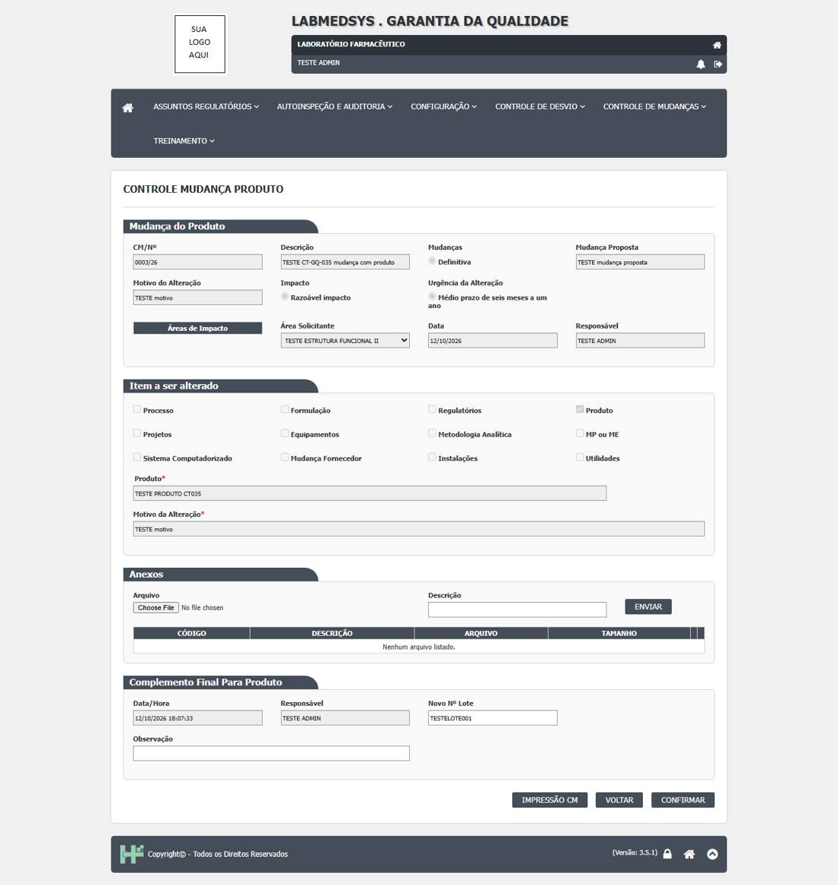

Menu: Garantia da Qualidade · Controle de Mudanças · Ficha: rascunho automático, a completar · Origem no sistema entregue: ControleMudancaProduto
As telas novas seguem o processo e as regras do sistema entregue, sem transcrever o que for falha de código, de conceito ou de campo mal colocado. Cada decisão na ficha é Manter, Corrigir ou Ideal depois.
Como é a tela no sistema entregue (layout reconstruído)
Reconstruído a partir do código das páginas do sistema entregue: mostra os campos, os rótulos, os asteriscos de obrigatório e a posição. Não tem dados e não usa o tema do Principal; os prints reais estão logo abaixo. Opções marcadas por padrão (caixas e botões de opção) são do código, não de dados.
Lista

Editar

Visualizar

Prints reais do sistema entregue (testes de 12/10/2026)
Telas do ambiente de teste do sistema entregue, tiradas durante os casos de teste da GQ.
Caso CT-GQ-043

Levantamento no código (rascunho automático)
A ficha completa desta tela ainda não foi escrita. Abaixo está o levantamento automático feito no código do sistema entregue: páginas, rotas, campos, modelos, regras de validação do servidor, situações e mensagens.
Menu: Garantia da Qualidade › Controle de Mudanças › Controle Mudança Produto
Origem no legado: área RM, controlador ControleMudancaProdutoController (HSolutions.GQ.UI/Areas/RM/Controllers/ControleMudancaProdutoController.cs)
Estado: rascunho automático do levantamento; a ficha completa fica em ../fichas/.
Este levantamento descreve o comportamento atual do sistema entregue, sem julgamento. A decisão do que manter, corrigir ou deixar para o ideal está na ficha completa.
1. Páginas da tela
| Página | Arquivo | Modelo |
|---|---|---|
| Editar | HSolutions.GQ.UI/Areas/RM/Views/ControleMudancaProduto/Editar.cshtml | ControleProdutoMudancaSalvarModel |
| Imprimir | HSolutions.GQ.UI/Areas/RM/Views/ControleMudancaProduto/Imprimir.cshtml | — |
| Index | HSolutions.GQ.UI/Areas/RM/Views/ControleMudancaProduto/Index.cshtml | ControleMudancaProdutoIndexModel |
| Visualizar | HSolutions.GQ.UI/Areas/RM/Views/ControleMudancaProduto/Visualizar.cshtml | ControleProdutoMudancaSalvarModel |
| _GridControleProdutoMudanca | HSolutions.GQ.UI/Areas/RM/Views/ControleMudancaProduto/_GridControleProdutoMudanca.cshtml | — |
Partials usados: HSolutions.GQ.UI/Views/Shared/_UploadArquivo.cshtml, HSolutions.GQ.UI/Views/Shared/_GridAnexos.cshtml, HSolutions.GQ.UI/Views/Shared/_Log.cshtml, HSolutions.GQ.UI/Views/Shared/_PaginacaoGrid.cshtml
2. Ações do controlador (rotas)
| Ação | Retorno | Parâmetros | Atributos | Linha |
|---|---|---|---|---|
| Index | ActionResult | 37 | ||
| Pesquisar | JsonResult | DateTime? dataInicio, DateTime? dataFim, int? indice, string cmn, string descricao, int situacao | HttpPost | 45 |
| Editar | ActionResult | int id | 119 | |
| Visualizar | ActionResult | int id | 138 | |
| SalvarControleProdutoMudanca | JsonResult | ControleProdutoMudancaSalvarModel model | HttpPost | 160 |
| Imprimir | ActionResult | DateTime? dataInicio, DateTime? dataFim, string cmn, string descricao, int situacao | HttpGet | 253 |
| ImprimirCM | ActionResult | int id | HttpGet | 311 |
3. Campos, colunas e botões
Editar (HSolutions.GQ.UI/Areas/RM/Views/ControleMudancaProduto/Editar.cshtml)
Rótulos: CM/Nº (:34); Descrição (:38); Mudanças (:42); Mudança Proposta (:53); Motivo do Alteração (:60); Impacto (:64); Urgência da Alteração (:71); Área Solicitante (:102); Data (:109); Responsável (:113); Processo (:136); Formulação (:147); Regulatórios (:158); Produto (:169); Projetos (:180); Equipamentos (:191); Metodologia Analítica (:202); MP ou ME (:213); Sistema Computadorizado (:224); Mudança Fornecedor (:235); Instalações (:246); Utilidades (:257); Produto * (:263); Motivo da Alteração * (:274); Data/Hora (:315); Responsável (:320); Novo Nº Lote (:324); Justificativa (:332); Observação (:336)
| Tipo | Campo | Linha |
|---|---|---|
| input:hidden | hfId | 27 |
| input:text | txtProduto | 268 |
| input:text | txtMotivoAlteracao | 275 |
| input:text | txtDataControleMudancaProduto | 316 |
| input:text | txtNumeroLote | 325 |
| input:text | txtJustificativa | 333 |
| input:text | txtObservacao | 337 |
Botões e atalhos: Impressão cm (:346); Voltar (:347); Confirmar (:348)
Index (HSolutions.GQ.UI/Areas/RM/Views/ControleMudancaProduto/Index.cshtml)
Rótulos: CM/Nº (:24); Descrição (:29); Situação (:44); Data Início (:54)
| Tipo | Campo | Linha |
|---|---|---|
| input:text | txtCMN | 25 |
| input:text | txtDescricao | 30 |
| select | cboSituacao | 45 |
| input:text | txtDataInicio | 56 |
| input:text | txtDataFim | 60 |
Botões e atalhos: Imprimir (:35); Limpar (:36); Pesquisar (:37)
Visualizar (HSolutions.GQ.UI/Areas/RM/Views/ControleMudancaProduto/Visualizar.cshtml)
Rótulos: CM/Nº (:33); Descrição (:37); Mudanças (:41); Mudança Proposta (:52); Motivo da Alteração (:59); Impacto (:63); Urgência da Alteração (:70); Áreas de Impacto (:81); Área Solicitante (:102); Data (:109); Responsável (:113); Processo (:136); Formulação (:147); Regulatórios (:158); Produto (:169); Projetos (:180); Equipamentos (:191); Metodologia Analítica (:202); MP ou ME (:213); Sistema Computadorizado (:224); Mudança Fornecedor (:235); Instalações (:246); Utilidades (:257); Produto * (:263); Motivo da Alteração * (:274); Data/Hora (:308); Responsável (:313); Nº do Lote (:317); Observação (:325); Justificativa (:329)
| Tipo | Campo | Linha |
|---|---|---|
| input:hidden | hfId | 26 |
| input:text | txtProduto | 268 |
| input:text | txtMotivoAlteracao | 275 |
| input:text | txtNumeroLote | 318 |
| input:text | txtObservacao | 326 |
| input:text | txtJustificativa | 330 |
Botões e atalhos: Impressão cm (:337); Voltar (:338)
_GridControleProdutoMudanca (HSolutions.GQ.UI/Areas/RM/Views/ControleMudancaProduto/_GridControleProdutoMudanca.cshtml)
| Tipo | Campo | Linha |
|---|---|---|
| input:image | btnLog | 59 |
_UploadArquivo (HSolutions.GQ.UI/Views/Shared/_UploadArquivo.cshtml)
Rótulos: Arquivo (:75); Descrição (:81); Status (:99); Observação (:112)
| Tipo | Campo | Linha |
|---|---|---|
| input:hidden | hdnArquivoId | 67 |
| input:file | txtArquivo | 76 |
| input:text | txtDescricaoArquivo | 82 |
| select | StatusMonitoramento | 100 |
| textarea | txtObservacao | 113 |
Botões e atalhos: Enviar (:87)
_Log (HSolutions.GQ.UI/Views/Shared/_Log.cshtml)
Botões e atalhos: FECHAR (:7)
4. Modelos de dados da tela
ControleMudancaProdutoIndexModel (HSolutions.GQ.UI/Areas/RM/Models/ControleMudancaProdutoIndexModel.cs)
| Tipo | Propriedade | Validação | Linha |
|---|---|---|---|
| IList |
Situacoes | 15 |
ControleMudancaProdutoIndexResultadoModel (HSolutions.GQ.UI/Areas/RM/Models/ControleMudancaProdutoIndexResultadoModel.cs)
| Tipo | Propriedade | Validação | Linha |
|---|---|---|---|
| int | Id | 16 | |
| string | CMN | 17 | |
| string | Descricao | 18 | |
| DateTime? | DataAbertura | 19 | |
| string | Situacao | 20 |
ControleProdutoMudancaSalvarModel (HSolutions.GQ.UI/Areas/RM/Models/ControleProdutoMudancaSalvarModel.cs)
| Tipo | Propriedade | Validação | Linha |
|---|---|---|---|
| int | IdSolicitacaoMudanca | 14 | |
| string | Cmn | 15 | |
| string | Descricao | 16 | |
| string | MudancaProposta | 17 | |
| string | MotivoAlteracao | 18 | |
| string | TipoMudanca | 19 | |
| string | DataValidade | 20 | |
| string | Impacto | 21 | |
| string | UrgenciaAlteracao | 22 | |
| string | ItemAlterado | 23 | |
| string | DescricaoProduto | 24 | |
| IList |
AreasImpacto | 25 | |
| string | NomeAreaSolicitante | 26 | |
| string | DataCriacao | 27 | |
| string | NomeResponsavel | 28 | |
| string | NomeAreaResponsavel | 30 | |
| int | IdAreaResponsavel | 31 | |
| string | NomeResponsavelArea | 32 | |
| string | Justificativa | 34 | |
| string | Observacao | 35 | |
| string | NumeroLote | 36 | |
| string | ResponsavelControleMudancaProduto | 37 | |
| DateTime | DataControleMudancaProduto | 38 | |
| List |
Anexos | 40 | |
| IList |
ItemsASeralterados | 41 |
GridModel (HSolutions.GQ.UI/Models/GridModel.cs)
| Tipo | Propriedade | Validação | Linha |
|---|---|---|---|
| IEnumerable |
Source | 14 | |
| PaginacaoGridModel | Paginacao | 16 |
UploadModel (HSolutions.GQ.UI/Models/UploadModel.cs)
| Tipo | Propriedade | Validação | Linha |
|---|---|---|---|
| string | Url | 43 | |
| string | PosCallback | 47 | |
| string | PreCallback | 51 | |
| IDictionary |
Status | 53 | |
| bool | ExibeObservacao | 54 |
5. Situação (estado) e histórico
- Pesquisar (:45)
- CONSULTA: Aprovada, PendenteAprovacaoProduto
- SalvarControleProdutoMudanca (:160)
- MUDA PARA: Aprovada (:218)
- HISTÓRICO: altera SEM histórico (:227)
- Imprimir (:253)
- CONSULTA: Aprovada, PendenteAprovacaoProduto
6. Regras de validação do servidor
Cada linha é uma regra que o servidor confere ao gravar. A mensagem é a que o usuário vê.
| Validador | Quando recusa (condição) | Mensagem | Campo | Linha |
|---|---|---|---|---|
| ControleProdutoMudancaValidator | if (entity == null) | Entidade de domínio não pode ser nula. | — | 17 |
| ControleProdutoMudancaValidator | — | A justificativa do controle de produto de mudança é obrigatória. | — | 26 |
7. Mensagens (servidor e navegador)
Nada encontrado.
Script HSolutions.GQ.UI/Areas/RM/Script/ControleMudancaProdutoIndex.js — ações chamadas: actionImprimir, actionPesquisar
Nada encontrado.
Script HSolutions.GQ.UI/Areas/RM/Script/ControleMudancaProdutoSalvar.js — ações chamadas: —
Nada encontrado.
8. A completar na análise
- [ ] Regras de cada campo (obrigatório, tamanho, máscara, origem da lista).
- [ ] Quem pode ver e executar cada ação (funções de permissão).
- [ ] Lookups com outros módulos (Estoque, Produção, Principal).
- [ ] Anexos, relatórios (PDF) e notificações.
- [ ] Falhas conhecidas a replicar (inventário de telas e plano de testes).
- [ ] Casos de teste de aceite (plano de testes da GQ).